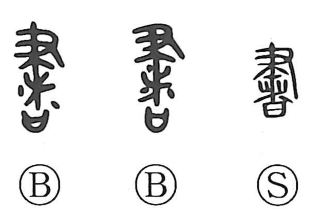

Explanation
書 is a compound of 聿, the hand holding a writing brush, and 者, which in its archaic form shows branches piled over a ritual “sai” receptacle and then covered with earth to make an earthen hedge—the source of 堵, “clay wall.” In early villages such walls were embedded with talismanic slips as protective charms, and 書 originally named the sacred characters brushed onto these talismans. From this ritual center it came to mean an official document; bronze inscriptions preserve formulas like “receive the writing and confer investiture.” Because of this sacred-administrative role, 書史 referred to the official in charge of documents; 史 itself first denoted a rite and its record. Over time the sense broadened to ordinary writing—letters, books, and characters—and to calligraphy executed according to established methods (書法), a celebrated art of the East.